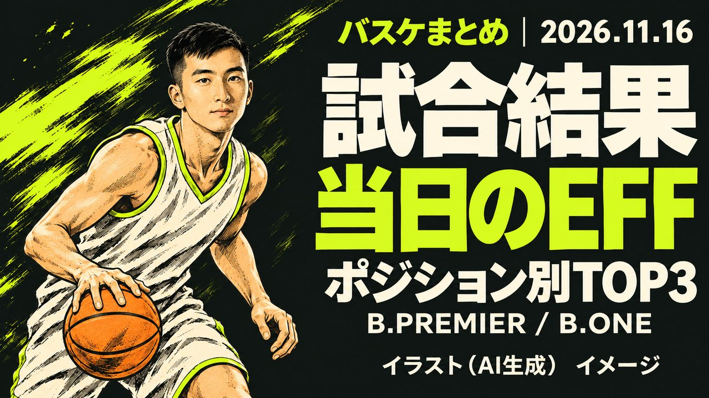

11/16 試合結果・当日のEFF

試合結果
B.PREMIER
群馬100 – 80滋賀終了千葉J104 – 110三遠終了A東京104 – 79神戸終了横浜BC66 – 95川崎終了広島85 – 63A千葉終了琉球102 – 96富山終了B.ONE
福岡86 – 98徳島終了この日試合なし：B.NEXT
試合結果 ／ 当日の EFF
当日のEFF・ポジション別TOP3
実際に出場した選手・公式試合スタッツ
B.PREMIER
PG
| 位 | 選手・所属 | 得点 | REB | AST | EFF |
|---|---|---|---|---|---|
| 1 | 佐々木 隆成三遠・PG/SG | 16 | 4 | 14 | 30 |
| 2 | 大浦 颯太琉球・PG | 25 | 5 | 3 | 29 |
| 3 | 富樫 勇樹千葉J・PG | 8 | 7 | 8 | 16 |
SG
| 位 | 選手・所属 | 得点 | REB | AST | EFF |
|---|---|---|---|---|---|
| 1 | ブライアン・アンゴラ富山・SG/SF | 39 | 5 | 8 | 48 |
| 2 | クリストファー・スミス広島・SG/SF | 24 | 12 | 4 | 38 |
| 3 | 佐々木 隆成三遠・PG/SG | 16 | 4 | 14 | 30 |
SF
| 位 | 選手・所属 | 得点 | REB | AST | EFF |
|---|---|---|---|---|---|
| 1 | キヨンテ・ジョンソンA東京・SF | 38 | 8 | 1 | 52 |
| 2 | ブライアン・アンゴラ富山・SG/SF | 39 | 5 | 8 | 48 |
| 3 | クリストファー・スミス広島・SG/SF | 24 | 12 | 4 | 38 |
PF
| 位 | 選手・所属 | 得点 | REB | AST | EFF |
|---|---|---|---|---|---|
| 1 | マット・ボンズ川崎・PF | 26 | 9 | 5 | 36 |
| 2 | ケリー・ブラックシアー・ジュニア群馬・C/PF | 20 | 10 | 4 | 34 |
| 3 | ジェイク・ヴァン・タバーゲン三遠・SF/PF | 29 | 8 | 0 | 30 |
C
| 位 | 選手・所属 | 得点 | REB | AST | EFF |
|---|---|---|---|---|---|
| 1 | ジャック・クーリー琉球・C | 30 | 13 | 7 | 53 |
| 2 | ケリー・ブラックシアー・ジュニア群馬・C/PF | 20 | 10 | 4 | 34 |
| 3 | ライアン・ロシターA東京・C/PF | 5 | 9 | 11 | 26 |
B.ONE
PG
| 位 | 選手・所属 | 得点 | REB | AST | EFF |
|---|---|---|---|---|---|
| 1 | 塚本 雄貴徳島・PG | 15 | 2 | 6 | 18 |
| 2 | 野溝 利一福岡・PG | 16 | 2 | 2 | 16 |
| 3 | 小林 遥太福岡・PG | 6 | 1 | 8 | 13 |
SG
| 位 | 選手・所属 | 得点 | REB | AST | EFF |
|---|---|---|---|---|---|
| 1 | 青山 晃也徳島・SG | 12 | 2 | 3 | 14 |
| 2 | オリバー・シュウ徳島・SG/SF | 4 | 3 | 0 | 9 |
| 3 | 加藤 寿一福岡・SG/SF | 0 | 0 | 1 | -2 |
SF
| 位 | 選手・所属 | 得点 | REB | AST | EFF |
|---|---|---|---|---|---|
| 1 | 西川 貴之福岡・SF | 17 | 4 | 1 | 21 |
| 2 | 佐藤 誠人徳島・SF | 9 | 1 | 0 | 9 |
| 2 | オリバー・シュウ徳島・SG/SF | 4 | 3 | 0 | 9 |
PF
| 位 | 選手・所属 | 得点 | REB | AST | EFF |
|---|---|---|---|---|---|
| 1 | テイブリオン・ドーソン徳島・PF | 19 | 6 | 5 | 21 |
| 2 | ラポラス・アイヴァナーカス徳島・C/PF | 18 | 11 | 2 | 20 |
| 3 | キャメロン・オリバー福岡・C/PF | 24 | 7 | 2 | 17 |
C
| 位 | 選手・所属 | 得点 | REB | AST | EFF |
|---|---|---|---|---|---|
| 1 | ラポラス・アイヴァナーカス徳島・C/PF | 18 | 11 | 2 | 20 |
| 2 | キャメロン・オリバー福岡・C/PF | 24 | 7 | 2 | 17 |
| 3 | アイザック・バッツ徳島・C | 9 | 7 | 2 | 15 |
出典・選出ルール・注記
当日TOP3は全試合の公式記録確定後、出場時間がある選手の公式EFFでリーグ別・ポジション別に選出します。今季平均や予想とは別集計です。
公式登録の兼任ポジションは各部門の対象です。
同率は同順位、同率内は選手IDの昇順で最大3人を表示します。
ポジションは資料取得時点の公式登録で、当日の起用位置を断定しません。
未取得値は0に置き換えません。
EFF＝得点＋REB＋AST＋ST＋BS＋被ファウル－TO－被ブロック－ファウル－外した2P・3P・FT。順位には公式配信EFFを使用し、内訳からの再計算で置き換えません。公式用語集
当日TOP3のポジション資料取得：2026-11-15 19:56 JST
公式EFFと内訳算式の差を確認した記録：中島 三千哉（公式6／内訳7）、ブライアン・アンゴラ（公式48／内訳49）、ダラル・ウィリス ジュニア（公式16／内訳17）。公式配信値を優先しています。
当日TOP3のポジション資料取得：2026-11-15 19:57 JST
公式EFFと内訳算式の差を確認した記録：キャメロン・オリバー（公式17／内訳18）。公式配信値を優先しています。
この日試合なし：B.NEXT
資料取得 2026-11-16 22:59〜2026-11-16 22:59 JST
出典：B.LEAGUE公式
B.PREMIER 公式日程・結果（取得 2026-11-16 22:59 JST）
B.ONE 公式日程・結果（取得 2026-11-16 22:59 JST）
B.NEXT 公式日程・結果（取得 2026-11-16 22:59 JST）
公式試合詳細（取得 2026-11-16 22:59 JST）
公式試合詳細（取得 2026-11-16 22:59 JST）
公式試合詳細（取得 2026-11-16 22:59 JST）
公式試合詳細（取得 2026-11-16 22:59 JST）
公式試合詳細（取得 2026-11-16 22:59 JST）
公式試合詳細（取得 2026-11-16 22:59 JST）
公式試合詳細（取得 2026-11-16 22:59 JST）
公式クラブ登録選手一覧（取得時刻未記録）
公式クラブ登録選手一覧（取得時刻未記録）
公式クラブ登録選手一覧（取得時刻未記録）
公式クラブ登録選手一覧（取得時刻未記録）
公式クラブ登録選手一覧（取得時刻未記録）
公式クラブ登録選手一覧（取得時刻未記録）
公式クラブ登録選手一覧（取得時刻未記録）
公式クラブ登録選手一覧（取得時刻未記録）
公式クラブ登録選手一覧（取得時刻未記録）
公式クラブ登録選手一覧（取得時刻未記録）
公式クラブ登録選手一覧（取得時刻未記録）
公式クラブ登録選手一覧（取得時刻未記録）
公式クラブ登録選手一覧（取得時刻未記録）
公式クラブ登録選手一覧（取得時刻未記録）